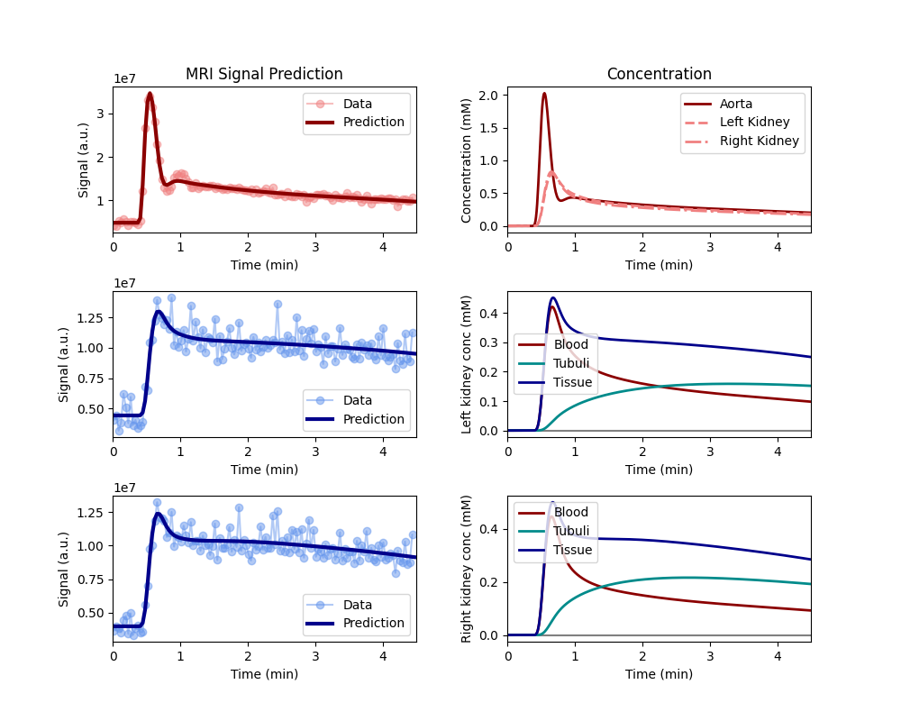

Note
Go to the end to download the full example code.
AortaKidneys#
These example shows the use of the AortaKidneys model to
fit signals measured in aorta and both kidneys simultaneously.
Import packages#
import dcmri as dc
Set up the model#
aok = dc.InverseAortaKidneys(
heartlung='chain', # Smoother first pass data
organs='2cxm', # Long acquisition times reveal extravasation # TODO to upper case 2CX for consistency
kidneys='2CF', # Intracellular agent
# veins='plug',
baseline='measured', # Data are available on precontrast T1
sequence='ZTE-3D-SPGR-SS',
t2s_relaxation_ao=None, # No T2* relaxation with TE=0
t2s_relaxation_lk=None, # No T2* relaxation with TE=0
t2s_relaxation_rk=None, # No T2* relaxation with TE=0 # TODO relaxation models are always the same for left and right. Needs just on t2s_relaxation_ki
estimate_bat='custom', # Use the dedicated BAT estimator
)
#aok.print_inputs()
#data = dc.load_kruk('061', 'pre')
data = dc.load_kruk('008', 'pre')
result = aok(data, verbose=2)
Iteration Total nfev Cost Cost reduction Step norm Optimality
0 1 2.7438e+02 2.71e+03
1 2 5.4017e+01 2.20e+02 2.39e-01 3.81e+02
2 3 2.2921e+01 3.11e+01 2.90e-01 3.37e+01
3 4 2.0808e+01 2.11e+00 2.30e-01 8.96e+01
4 5 2.0214e+01 5.95e-01 8.09e-02 1.92e+01
5 6 2.0019e+01 1.95e-01 1.05e-01 1.40e+01
6 7 1.9970e+01 4.94e-02 5.15e-02 2.52e+00
7 8 1.9948e+01 2.16e-02 5.11e-02 1.97e+00
8 9 1.9940e+01 8.73e-03 3.16e-02 1.22e+00
9 13 1.9938e+01 1.44e-03 1.40e-03 3.87e-01
10 16 1.9938e+01 1.49e-04 1.88e-04 2.43e+00
11 19 1.9938e+01 6.79e-07 2.52e-05 3.55e-01
12 20 1.9938e+01 5.66e-06 5.51e-06 3.39e-01
13 21 1.9938e+01 1.10e-05 1.11e-05 3.27e-01
14 22 1.9938e+01 5.52e-06 2.26e-05 2.30e+00
15 24 1.9938e+01 1.18e-05 6.30e-06 3.25e-01
16 25 1.9938e+01 1.17e-06 5.58e-06 2.26e+00
17 26 1.9938e+01 3.18e-06 1.57e-06 3.26e-01
18 28 1.9938e+01 3.38e-07 3.47e-07 3.26e-01
19 29 1.9938e+01 2.95e-07 6.95e-07 2.24e+00
20 31 1.9938e+01 2.48e-07 1.97e-07 3.26e-01
21 32 1.9938e+01 1.37e-07 1.74e-07 8.44e-01
`ftol` termination condition is satisfied.
Function evaluations 32, initial cost 2.7438e+02, final cost 1.9938e+01, first-order optimality 8.44e-01.
dc.print_quantities(result['pars'], digits=3)
+----------------------------------------------------------------------------------------------------------------------------------------------------+
| Quantities |
+--------+--------+------------+--------------------------------------------------------+-----------------+--------------+---------------+-----------+
| Key | Value | Unit | Name | Group | Bounds | DICOM | OSIPI |
+--------+--------+------------+--------------------------------------------------------+-----------------+--------------+---------------+-----------+
| BAT | 20.5 | sec | bolus arrival time | indicator | (-30, 30) | | Q.BA1.001 |
+--------+--------+------------+--------------------------------------------------------+-----------------+--------------+---------------+-----------+
| CO | 157.0 | mL/sec | cardiac output | physiological | (0, 500) | | |
| D_hl | 0.13 | | transit time dispersion in the heart and Lungs | physiological | (0.01, 0.99) | | |
| DRF | 0.363 | | Differential renal function | physiological | (0, 1) | | |
| DRPF | 0.458 | | Differential renal plasma flow | physiological | (0, 1) | | |
| E_li | 0.0 | | extraction fraction in liver | physiological | (0.0, 1.0) | | |
| E_lk | 0.134 | | extraction fraction in the left kidney | physiological | (0, 1) | | Q.PH1.005 |
| E_or | 0.212 | | extraction fraction in the organs | physiological | (0, 0.5) | | Q.PH1.005 |
| E_rk | 0.187 | | extraction fraction in the right kidney | physiological | (0, 1) | | Q.PH1.005 |
| F_p_lk | 0.0184 | mL/sec/cm3 | flow per unit tissue in plasma of the left kidney | physiological | (0, 0.1) | | |
| F_p_rk | 0.0212 | mL/sec/cm3 | flow per unit tissue in plasma of the right kidney | physiological | (0, 0.1) | | |
| fCO_ki | 0.0764 | | fraction of the cardiac output in the kidney | physiological | (0, 0.5) | | |
| FF_lk | 0.155 | | filtration fraction in the left kidney | physiological | (0, 0.5) | | |
| FF_rk | 0.23 | | filtration fraction in the right kidney | physiological | (0, 0.5) | | |
| GFR | 1.29 | mL/sec | glomerular filtration rate | physiological | (0, 10) | | |
| GFR_lk | 0.466 | mL/sec | glomerular filtration rate in the left kidney | physiological | (0, 20) | | |
| GFR_rk | 0.819 | mL/sec | glomerular filtration rate in the right kidney | physiological | (0, 20) | | |
| H | 0.45 | | hematocrit | physiological | (0, 1) | | Q.PH1.012 |
| PF_ki | 6.58 | mL/sec | plasma flow in the kidney | physiological | (0, 100) | | |
| PF_lk | 3.01 | mL/sec | plasma flow in the left kidney | physiological | (0, 100) | | |
| PF_rk | 3.56 | mL/sec | plasma flow in the right kidney | physiological | (0, 100) | | |
| T_b_or | 29.1 | sec | mean transit time in blood of the organs | physiological | (0, 60) | | Q.PH1.006 |
| T_e_or | 251.0 | sec | mean transit time in extracellular space of the organs | physiological | (0, 800) | | Q.PH1.006 |
| T_hl | 12.8 | sec | mean transit time in the heart and Lungs | physiological | (0, 30) | | Q.PH1.006 |
| T_lka | 0.192 | sec | mean transit time in the left kidney artery | physiological | (0, 5) | | Q.PH1.006 |
| T_p_lk | 15.9 | sec | mean transit time in plasma of the left kidney | physiological | (0, 30) | | Q.PH1.006 |
| T_p_rk | 14.0 | sec | mean transit time in plasma of the right kidney | physiological | (0, 30) | | Q.PH1.006 |
| T_rka | 0.168 | sec | mean transit time in the right kidney artery | physiological | (0, 5) | | Q.PH1.006 |
| T_u_lk | 135.0 | sec | mean transit time in tubuli of the left kidney | physiological | (30, 600) | | Q.PH1.006 |
| T_u_rk | 103.0 | sec | mean transit time in tubuli of the right kidney | physiological | (30, 600) | | Q.PH1.006 |
| v_ki | 1.0 | mL/cm3 | volume fraction in the kidney | physiological | (0, 1) | | Q.PH1.001 |
| v_p_lk | 0.293 | mL/cm3 | volume fraction in plasma of the left kidney | physiological | (0, 0.3) | | Q.PH1.001 |
| v_p_rk | 0.297 | mL/cm3 | volume fraction in plasma of the right kidney | physiological | (0, 0.3) | | Q.PH1.001 |
+--------+--------+------------+--------------------------------------------------------+-----------------+--------------+---------------+-----------+
| vol_ao | 1.0 | cm3 | ROI volume in the aorta | whole-body | (0.0, 1000) | | |
| vol_lk | 164.0 | cm3 | ROI volume in the left kidney | whole-body | (0.0, 1000) | | |
| vol_rk | 168.0 | cm3 | ROI volume in the right kidney | whole-body | (0.0, 1000) | | |
| weight | 70.0 | kg | body weight | whole-body | (0, 300) | PatientWeight | |
+----------------------------------------------------------------------------------------------------------------------------------------------------+
iso_lk, iso_rk = round(60 * data['nmGFR_lk']), round(60 * data['nmGFR_rk'])
mrr_lk, mrr_rk = round(60 * result['pars']['GFR_lk']), round(60 * result['pars']['GFR_rk'])
print(f"{'GFR (mL/min)':<14}{'Radio-isotope':>15}{'MRR':>8}")
print("-" * 37)
print(f"{'Left kidney':<14}{iso_lk:>15}{mrr_lk:>8}")
print(f"{'Right kidney':<14}{iso_rk:>15}{mrr_rk:>8}")
GFR (mL/min) Radio-isotope MRR
-------------------------------------
Left kidney 31 28
Right kidney 36 49

Total running time of the script: (0 minutes 1.817 seconds)